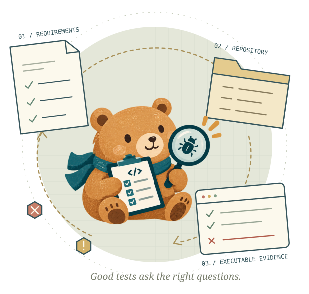

Test Generation
Author a standalone test suite. The evaluator runs it on defective and repaired snapshots.
Write tests→Replay both snapshots
Validity (HP) · Defect exposure (F2P) · Coverage (EC, CFG)A BENCHMARK FOR AUTONOMOUS TESTING
Given a specification and a repository,
can an agent discover what is broken?
Explore without hints. Derive what and where to test from product requirements. No issue reports or designated code targets.
Investigate coexisting defects. Test real Python repositories containing multiple recorded bugs.
Turn execution into evidence. Evaluate test quality and defect localization in two independent tasks.

THE AUTONOMOUS TEST ENGINEER'S WORKBENCH01 / THE QUESTION
A test engineer is rarely handed a failing line of code. They receive requirements, explore an unfamiliar system, and decide which behaviors deserve scrutiny.
Existing benchmarks often start with an issue description, a target function, or a file to inspect. TestEngineerBench removes these investigation hints. An agent receives a product requirements document (PRD), a prerelease repository, and a configured Docker environment. It must map required behavior to implementation and uncover multiple unknown defects.
Can coding agents autonomously uncover, localize, and substantiate software defects with reproducible evidence?
02 / THE BENCHMARK
The PRD defines what should work.
The agent decides where and how to test it.
No issue reports · No location hints
Author a standalone test suite. The evaluator runs it on defective and repaired snapshots.
Explore, author and execute probes, investigate failures, and submit a structured defect report.
The two tasks run independently. Task 2 does not consume Task 1's submitted suite; reference locations and repaired snapshots remain evaluator-only.
From databases and developer tools to security, multimedia, and scientific software. Defective snapshots contain a median of 80.4k source lines; reference defects span a median of 5 files and 11.5 edit hunks per instance.
03 / THE CENTRAL FINDING
Across seven frontier agents, executable tests and broad coverage
still leave a large gap in defect discrimination.
Tests pass on the repaired snapshot.
Tests reach reference changed lines.
Tests distinguish defective from repaired.
Seven-agent means from Table 3. HP pools test counts within each model; F2P and coverage average across instances.
04 / RESULTS
Mean recall falls from 78.11% at the file level to 51.29% at the function level. Finding a relevant file is only part of tracing the cause.
Agents localize 40.63–59.05% of single-file bugs, but only 2.00–7.84% of bugs whose reference locations span multiple files.
For GPT-5.6-Sol, authoring tests improves file, function, and hunk recall by 4.99, 2.77, and 2.69 points, with lower precision.
05 / INSIDE THE TRAJECTORIES
Real commands, tests, and outcomes.
Selected from the paper's Appendix D.
Excerpts preserve the reported assertions and outcomes; surrounding code and parameterization are omitted. Folium is an archived evaluation case and is not an additional current benchmark instance.
06 / A FEW DETAILS
A defective Python repository, a PRD specifying expected capabilities, boundary conditions and error behavior, and a Docker execution environment. Agents receive no bug-specific issue description, designated test entry point, target file, or reference fix.
A fail-to-pass (F2P) test fails on the defective snapshot and passes on the repaired snapshot, confirmed by repeated execution. A test merely executing changed lines does not establish defect exposure.
The report must match all reference files and function symbols and recover more than half of the reference edit hunks. Hunk matching uses a three-line tolerance. This measures localization of recorded bugs, rather than successful repair.
Task 1 grades a submitted test suite for validity, discrimination, and coverage. Task 2 grades a structured diagnostic report produced through active test execution and investigation. The tasks are independent evaluations of complementary abilities.
These are the paper's reported results for seven model–harness configurations. Localization measures agreement with reference annotations. The reference set does not exhaust every possible bug, and independent verification of all submitted report evidence is identified as future work.
07 / RESOURCES
Explore the paper, benchmark repository, and reusable visual assets.
Code and data release links will be added here when available.
@misc{wang2026testengineerbench,
title={TestEngineerBench: Evaluating Coding Agents
as Autonomous Software Test Engineers},
author={Wang, Xingjian and Wang, Shijian and Liu, Minghao
and Zou, Ji and Yang, Zetao and Lei, Xinping
and Liang, Yiming and Yan, Shen and Zhao, Enduo
and Shen, Xiaoyang and Xuan, Weihao and Liu, Jiaheng
and Zhang, Ge},
year={2026},
note={Preprint}
}